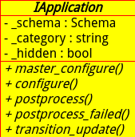

类图如下：

是所有app对象的基类。子类在GPI中给出程序逻辑并从功能上实现配置操作。app配置是作业提交的第一步。
实现配置方法的基本规则：
一般configure()和master_configure()方法会在作业提交的时候调用，所以原则上你
方法文档：
1.master_configure(self)
- 配置app的共享（主要）方面。
- 调用一次，splitting情况下也会调用
- 返回元组(modified_flag, appconfig)
- -appconfig(或appextra): 结构任意。由特定app运行时handler处理
- -modified_flag: 如果configure()时对象self被改变了则为true
- 如果方法未实现则忽略掉
2.config(self,master_aapconfig)
- 配置app的特定方面。与方法1有类似语义并且返回元组(modified_flag,appconfig).
- 具体子类必须实现，否则作业提交（submission)会失败。
- 参数master_configure是方法1的返回
- splitting情况下每个子作业对象调用一次。即有多少子作业就会调用多少次。
- 无spliting情况下则会调用一次.
- 从Ganga4.0.x开始，方法1被忽略。
3.postprocess(self)
- 作业运行完后执行（即在报告作业状态为completed时）
- 默认未做任何事
- 可能抛出一个异常PostprocessStatusUpdate('faild').这种情况下作业状态是'failed'.但postprocess_failed()钩子不被调用。
4.postprocess_failed(self)
- 如字义作业报告为失败时调用。默认未做事
5.transion_update(self,new_status)
- 在parent作业改变状态之前调用
Comments !